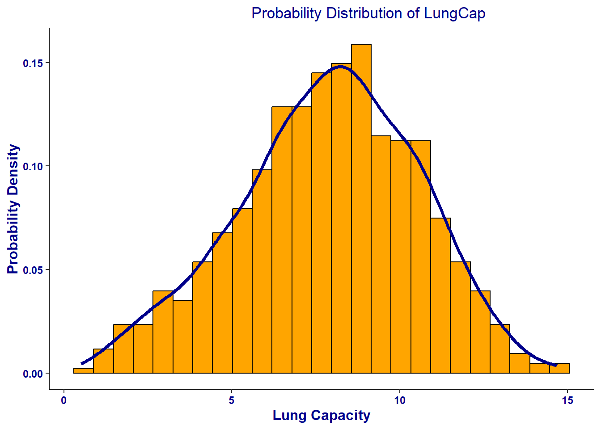
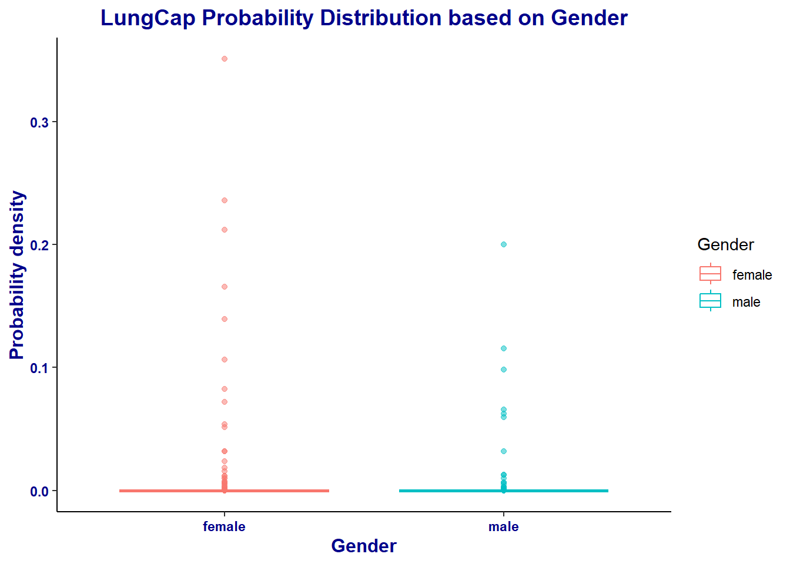

Code
library(tidyverse)
library(readxl)
library(ggplot2)
library(stats)
library(viridis)
knitr::opts_chunk$set(echo = TRUE, warning = FALSE)Akhilesh Kumar Meghwal
February 28, 2023
First, let’s read in the data from the Excel file:
The distribution of LungCap looks as follows:
The LungCap dataset contains 725 observations and six variables, namely LungCap, Age, Height, Smoke, Gender, and Cesarean. LungCap is the primary variable of interest, measuring the lung capacity of participants. Age and Height provide demographic information, indicating the age and height of each participant.
Each row in the dataset corresponds to a unique participant and provides their values for the six variables. Smoke is a categorical variable that denotes whether the participant smokes or not. Gender is another categorical variable that identifies the gender of each participant. Cesarean is a binary variable indicating whether the participant was born via cesarean section or not.
The LungCap dataset may be useful in exploring the relationships between lung capacity, demographic variables, and smoking status.
The following plot displays the distribution of LungCap:
library(tidyverse)
library(ggplot2)
df %>%
ggplot(aes(LungCap, ..density..)) +
geom_histogram(bins = 25, color = "black", fill = "orange") +
geom_density(color = "darkblue", linewidth = 1.25) +
theme_classic() +
theme(plot.title = element_text(hjust = 0.65, color = "darkblue")) +
theme(axis.text = element_text(face = "bold", color="darkblue"), axis.title = element_text(face = "bold", size=12, color="darkblue")) +
xlab("Lung Capacity") +
ylab("Probability Density") +
labs(title = "Probability Distribution of LungCap")
The plot displays the distribution of lung capacity measurements in a sample of individuals. The histogram and density plots indicate that the data is approximately normally distributed, with the majority of observations clustered near the mean. Specifically, the histogram shows a bell-shaped curve, with the highest frequency of observations centered around the mean value.
The density plot shows a smooth, symmetric curve, which closely follows the histogram and suggests that the data follows a normal distribution. These results are consistent with what we might expect, given that lung capacity is a physiological measure that is likely to vary around a central tendency. Taken together, these findings suggest that the sample data is well-behaved and that the majority of individuals in the sample have lung capacities that are close to the average value.
df %>%
ggplot(aes(y = dnorm(LungCap), x = Gender, color = Gender)) +
geom_boxplot(alpha = 0.5) +
scale_fill_manual(values = c("green", "orange")) +
theme_classic() +
theme(plot.title = element_text(hjust = 0.5, color = "darkblue", face = "bold", size = 14),
axis.text = element_text(face = "bold", color="darkblue"),
axis.title = element_text(face = "bold", size=12, color="darkblue")) +
labs(title = "LungCap Probability Distribution based on Gender", y = "Probability density")
The probability density of LungCap for females is higher than for males, as evidenced by the higher median value and larger range of data in the female group compared to the male group. This suggests that gender may be a significant factor in determining LungCap values.
The above table shows the lung capacity of individuals who smoke versus those who do not smoke. The table suggests that the mean lung capacity of those who smoke is greater than that of those who do not smoke. However, the statement argues that this result does not make sense and cannot be conclusively interpreted as a difference between smokers and non-smokers.
The output suggests that the lung capacity of an individual who smokes may be influenced by various biological factors unique to each person. Therefore, while smoking can be a contributing factor to reduced lung capacity, it cannot be the sole factor responsible for differences in lung capacity between smokers and non-smokers.
The output emphasizes that the difference in mean lung capacity between smokers and non-smokers is not a conclusive indicator of the effects of smoking on lung capacity. Other factors, such as age, gender and overall health, may also play a role in lung capacity. Therefore, it is important to consider these factors when drawing conclusions about the impact of smoking on lung capacity or other health outcomes.
Error in mutate(Lc, AgeGrp = case_when(Age <= 13 ~ "less than or equal to 13", : object 'Lc' not foundLc %>%
ggplot(aes(x = LungCap, fill = Smoke)) +
geom_histogram(bins = 25, color = "black") +
facet_wrap(vars(AgeGrp)) +
scale_fill_manual(values = c("darkgreen", "darkblue")) +
theme_classic() +
labs(title = "Relationship of LungCap and Smoke based on age categories", y = "Frequency", x = "Lung Capacity")Error in ggplot(., aes(x = LungCap, fill = Smoke)): object 'Lc' not foundThe graph shows the frequency of lung capacity for non-smokers and smokers in different age categories, namely:
From the above plot, we can derive two important observations. Firstly, we observe that non-smokers generally have a higher lung capacity compared to smokers. This is indicated by the fact that the bars for non-smokers are consistently taller than the bars for smokers across all age groups. This observation is consistent with the known negative impact of smoking on lung function.
Secondly, we observe that the number of smokers is relatively lower in the age group “less than or equal to 13”. This is shown by the relatively shorter bars for smokers in this age group. This observation could be due to several factors, such as lower access to cigarettes or lower rates of smoking initiation in younger age groups.
Additionally, we can also observe that there is a general trend of decreasing lung capacity as age increases, regardless of smoking status. This is indicated by the fact that the bars for all age groups are shorter compared to the bars for the previous age group. This trend is consistent with the natural decline in lung function that occurs with aging.
In summary, the above graph shows that non-smokers generally have a higher lung capacity compared to smokers, and that smoking rates are relatively lower in younger age groups. The graph also highlights the general trend of decreasing lung capacity as age increases, regardless of smoking status. These observations provide important insights into the relationship between lung capacity, smoking, and age, and can be useful for informing public health interventions and promoting healthy lifestyles.
Lc %>%
ggplot(aes(x = Age, y = LungCap, color = Smoke)) +
geom_line(linewidth = 1.25) +
scale_color_manual(values = c("darkgreen", "darkred")) +
theme_classic() +
facet_wrap(vars(Smoke)) +
labs(title = "Relationship of Lung Capacity and Smoking Status by Age", y = "Lung Capacity", x = "Age") +
theme(plot.title = element_text(face = "bold", size = 14, hjust = 0.5),
axis.title.x = element_text(face = "bold", size = 12),
axis.title.y = element_text(face = "bold", size = 12),
axis.text.x = element_text(size = 10),
axis.text.y = element_text(size = 10),
legend.title = element_blank(),
legend.text = element_text(face = "bold", size = 10),
panel.grid.major = element_blank(),
panel.grid.minor = element_blank(),
panel.background = element_blank())Error in ggplot(., aes(x = Age, y = LungCap, color = Smoke)): object 'Lc' not found1c presents a the mean lung capacity of individuals who smoke versus those who do not smoke. The statement argues that this result cannot be conclusively interpreted as a difference between smokers and non-smokers, as other biological factors unique to each individual may also influence lung capacity.
On the other hand, 1e presents a line graph that compares lung capacity with age for smokers and non-smokers. The graph suggests that non-smokers generally have higher lung capacity compared to smokers, and that the difference in lung capacity between the two groups increases with age.
In summary, 1c presents a summary statistic that may be influenced by other factors, while 1e presents a visual representation of the relationship between smoking and lung capacity over time, which provides a more nuanced understanding of the impact of smoking on lung capacity.
Error in `filter()`:
! Problem while computing `..1 = Prior_convitions == 2`.
Caused by error in `mask$eval_all_filter()`:
! object 'Prior_convitions' not foundProbability that a randomly selected inmate has exactly 2 prior convictions is 0.1975309.
Error in `filter()`:
! Problem while computing `..1 = Prior_convitions < 2`.
Caused by error in `mask$eval_all_filter()`:
! object 'Prior_convitions' not foundError in eval(expr, envir, enclos): object 'temp' not foundProbability that a randomly selected inmate has fewer than 2 convictions is 0.6938272
Error in `filter()`:
! Problem while computing `..1 = Prior_convitions <= 2`.
Caused by error in `mask$eval_all_filter()`:
! object 'Prior_convitions' not foundError in eval(expr, envir, enclos): object 'temp' not foundProbability that a randomly selected inmate has 2 or fewer prior convictions: 0.891358
Error in `filter()`:
! Problem while computing `..1 = Prior_convitions > 2`.
Caused by error in `mask$eval_all_filter()`:
! object 'Prior_convitions' not foundError in eval(expr, envir, enclos): object 'temp' not foundProbability that a randomly selected inmate has more than 2 prior convictions is 0.108642
Error in `mutate()`:
! Problem while computing `Wm = Prior_convitions * Probability`.
Caused by error in `mask$eval_all_mutate()`:
! object 'Prior_convitions' not found[1] 0Expected value for the number of prior convictions: 1.28642
Variance for the Prior Convictions:
Standard Deviation for the Prior Convictions:
Variance and Standard Deviation for the Prior Convictions are 0.8562353 and 0.9253298 respectively.
---
title: "Homework 1 - Akhilesh Kumar"
author: "Akhilesh Kumar Meghwal"
description: "DACSS_603_Homework 1 on Descriptive Statistics and Probability"
date: "02/28/2023"
format:
html:
df-print: paged
css: styles.css
toc: true
code-fold: true
code-copy: true
code-tools: true
categories:
- hw1
- desriptive statistics
- probability
---
```{r}
#| label: setup
#| warning: false
library(tidyverse)
library(readxl)
library(ggplot2)
library(stats)
library(viridis)
knitr::opts_chunk$set(echo = TRUE, warning = FALSE)
```
# Question 1
## Reading Data
First, let's read in the data from the Excel file:
```{r, echo=T}
library(readxl)
df <- read_excel("_data/LungCapData.xls")
```
The distribution of LungCap looks as follows:
The LungCap dataset contains 725 observations and six variables, namely LungCap, Age, Height, Smoke, Gender, and Cesarean. LungCap is the primary variable of interest, measuring the lung capacity of participants. Age and Height provide demographic information, indicating the age and height of each participant.
Each row in the dataset corresponds to a unique participant and provides their values for the six variables. Smoke is a categorical variable that denotes whether the participant smokes or not. Gender is another categorical variable that identifies the gender of each participant. Cesarean is a binary variable indicating whether the participant was born via cesarean section or not.
The LungCap dataset may be useful in exploring the relationships between lung capacity, demographic variables, and smoking status.
## 1a: What does the distribution of LungCap look like?
The following plot displays the distribution of LungCap:
```{r, echo=T}
library(tidyverse)
library(ggplot2)
df %>%
ggplot(aes(LungCap, ..density..)) +
geom_histogram(bins = 25, color = "black", fill = "orange") +
geom_density(color = "darkblue", linewidth = 1.25) +
theme_classic() +
theme(plot.title = element_text(hjust = 0.65, color = "darkblue")) +
theme(axis.text = element_text(face = "bold", color="darkblue"), axis.title = element_text(face = "bold", size=12, color="darkblue")) +
xlab("Lung Capacity") +
ylab("Probability Density") +
labs(title = "Probability Distribution of LungCap")
```
The plot displays the distribution of lung capacity measurements in a sample of individuals. The histogram and density plots indicate that the data is approximately normally distributed, with the majority of observations clustered near the mean. Specifically, the histogram shows a bell-shaped curve, with the highest frequency of observations centered around the mean value.
The density plot shows a smooth, symmetric curve, which closely follows the histogram and suggests that the data follows a normal distribution. These results are consistent with what we might expect, given that lung capacity is a physiological measure that is likely to vary around a central tendency. Taken together, these findings suggest that the sample data is well-behaved and that the majority of individuals in the sample have lung capacities that are close to the average value.
## 1b: Compare the probability distribution of the LungCap with respect to Males and Females?
```{r}
df %>%
ggplot(aes(y = dnorm(LungCap), x = Gender, color = Gender)) +
geom_boxplot(alpha = 0.5) +
scale_fill_manual(values = c("green", "orange")) +
theme_classic() +
theme(plot.title = element_text(hjust = 0.5, color = "darkblue", face = "bold", size = 14),
axis.text = element_text(face = "bold", color="darkblue"),
axis.title = element_text(face = "bold", size=12, color="darkblue")) +
labs(title = "LungCap Probability Distribution based on Gender", y = "Probability density")
```
The probability density of LungCap for females is higher than for males, as evidenced by the higher median value and larger range of data in the female group compared to the male group. This suggests that gender may be a significant factor in determining LungCap values.
## 1c: Compare the mean lung capacities for smokers and non-smokers. Does it make sense?
```{r}
library(knitr)
Mean_Lung_Capacity <- df %>%
group_by(Smoke) %>%
summarise(mean = mean(LungCap))
Mean_Lung_Capacity
```
The above table shows the lung capacity of individuals who smoke versus those who do not smoke. The table suggests that the mean lung capacity of those who smoke is greater than that of those who do not smoke. However, the statement argues that this result does not make sense and cannot be conclusively interpreted as a difference between smokers and non-smokers.
The output suggests that the lung capacity of an individual who smokes may be influenced by various biological factors unique to each person. Therefore, while smoking can be a contributing factor to reduced lung capacity, it cannot be the sole factor responsible for differences in lung capacity between smokers and non-smokers.
The output emphasizes that the difference in mean lung capacity between smokers and non-smokers is not a conclusive indicator of the effects of smoking on lung capacity. Other factors, such as age, gender and overall health, may also play a role in lung capacity. Therefore, it is important to consider these factors when drawing conclusions about the impact of smoking on lung capacity or other health outcomes.
## 1d: Examine the relationship between Smoking and Lung Capacity within age groups: “less than or equal to 13”, “14 to 15”, “16 to 17”, and “greater than or equal to 18”.
```{r}
Lc <- mutate(Lc, AgeGrp = case_when(
Age <= 13 ~ "less than or equal to 13",
Age == 14 | Age == 15 ~ "14 to 15",
Age == 16 | Age == 17 ~ "16 to 17",
Age >= 18 ~ "greater than or equal to 18"
))
Lc %>%
ggplot(aes(x = LungCap, fill = Smoke)) +
geom_histogram(bins = 25, color = "black") +
facet_wrap(vars(AgeGrp)) +
scale_fill_manual(values = c("darkgreen", "darkblue")) +
theme_classic() +
labs(title = "Relationship of LungCap and Smoke based on age categories", y = "Frequency", x = "Lung Capacity")
```
The graph shows the frequency of lung capacity for non-smokers and smokers in different age categories, namely:
- “less than or equal to 13”,
- “14 to 15”,
- “16 to 17”, and
- “greater than or equal to 18”
From the above plot, we can derive two important observations. Firstly, we observe that non-smokers generally have a higher lung capacity compared to smokers. This is indicated by the fact that the bars for non-smokers are consistently taller than the bars for smokers across all age groups. This observation is consistent with the known negative impact of smoking on lung function.
Secondly, we observe that the number of smokers is relatively lower in the age group "less than or equal to 13". This is shown by the relatively shorter bars for smokers in this age group. This observation could be due to several factors, such as lower access to cigarettes or lower rates of smoking initiation in younger age groups.
Additionally, we can also observe that there is a general trend of decreasing lung capacity as age increases, regardless of smoking status. This is indicated by the fact that the bars for all age groups are shorter compared to the bars for the previous age group. This trend is consistent with the natural decline in lung function that occurs with aging.
In summary, the above graph shows that non-smokers generally have a higher lung capacity compared to smokers, and that smoking rates are relatively lower in younger age groups. The graph also highlights the general trend of decreasing lung capacity as age increases, regardless of smoking status. These observations provide important insights into the relationship between lung capacity, smoking, and age, and can be useful for informing public health interventions and promoting healthy lifestyles.
## 1e: Compare the lung capacities for smokers and non-smokers within each age group. Is your answer different from the one in part c. What could possibly be going on here?
```{r}
Lc %>%
ggplot(aes(x = Age, y = LungCap, color = Smoke)) +
geom_line(linewidth = 1.25) +
scale_color_manual(values = c("darkgreen", "darkred")) +
theme_classic() +
facet_wrap(vars(Smoke)) +
labs(title = "Relationship of Lung Capacity and Smoking Status by Age", y = "Lung Capacity", x = "Age") +
theme(plot.title = element_text(face = "bold", size = 14, hjust = 0.5),
axis.title.x = element_text(face = "bold", size = 12),
axis.title.y = element_text(face = "bold", size = 12),
axis.text.x = element_text(size = 10),
axis.text.y = element_text(size = 10),
legend.title = element_blank(),
legend.text = element_text(face = "bold", size = 10),
panel.grid.major = element_blank(),
panel.grid.minor = element_blank(),
panel.background = element_blank())
```
1c presents a the mean lung capacity of individuals who smoke versus those who do not smoke. The statement argues that this result cannot be conclusively interpreted as a difference between smokers and non-smokers, as other biological factors unique to each individual may also influence lung capacity.
On the other hand, 1e presents a line graph that compares lung capacity with age for smokers and non-smokers. The graph suggests that non-smokers generally have higher lung capacity compared to smokers, and that the difference in lung capacity between the two groups increases with age.
In summary, 1c presents a summary statistic that may be influenced by other factors, while 1e presents a visual representation of the relationship between smoking and lung capacity over time, which provides a more nuanced understanding of the impact of smoking on lung capacity.
## Question 2
## Reading the table
```{r}
Prior_convictions <- c(0:4)
Inmate_count <- c(128, 434, 160, 64, 24)
Pc <- tibble(Prior_convictions, Inmate_count)
Pc
```
```{r}
Pc <- mutate(Pc, Probability = Inmate_count/sum(Inmate_count))
Pc
```
## 2a: What is the probability that a randomly selected inmate has exactly 2 prior convictions?
```{r}
Pc %>%
filter(Prior_convitions == 2) %>%
select(Probability)
```
Probability that a randomly selected inmate has exactly 2 prior convictions is 0.1975309.
## 2b: What is the probability that a randomly selected inmate has fewer than 2 prior convictions?
```{r}
temp <- Pc %>%
filter(Prior_convitions < 2)
sum(temp$Probability)
```
Probability that a randomly selected inmate has fewer than 2 convictions is 0.6938272
## 2c: What is the probability that a randomly selected inmate has 2 or fewer prior convictions?
```{r}
temp <- Pc %>%
filter(Prior_convitions <= 2)
sum(temp$Probability)
```
Probability that a randomly selected inmate has 2 or fewer prior convictions: 0.891358
## 2d: What is the probability that a randomly selected inmate has more than 2 prior convictions?
```{r}
temp <- Pc %>%
filter(Prior_convitions > 2)
sum(temp$Probability)
```
Probability that a randomly selected inmate has more than 2 prior convictions is 0.108642
## 2e: What is the expected value for the number of prior convictions?
```{r}
Pc <- mutate(Pc, Wm = Prior_convitions*Probability)
e <- sum(Pc$Wm)
e
```
Expected value for the number of prior convictions: 1.28642
## 2f: Calculate the variance and the standard deviation for the Prior Convictions.
Variance for the Prior Convictions:
```{r}
v <-sum(((Pc$Prior_convictions-e)^2)*Pc$Probability)
v
```
Standard Deviation for the Prior Convictions:
```{r}
sqrt(v)
```
Variance and Standard Deviation for the Prior Convictions are 0.8562353 and 0.9253298 respectively.